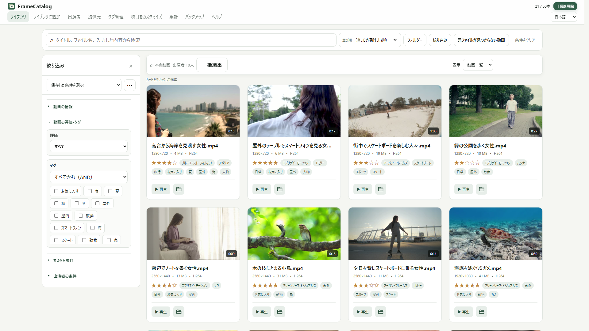
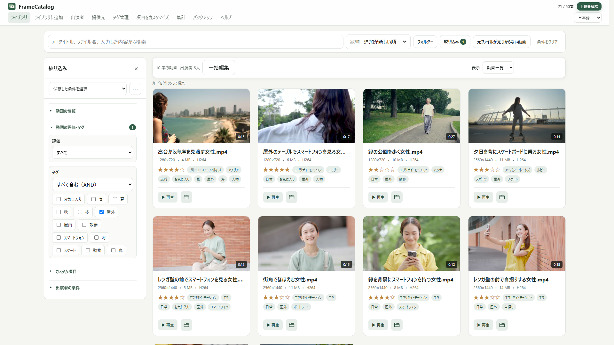

PC内の動画を管理
ファイルやフォルダーを指定して、MP4・MOV・MKV・AVIなどの動画をまとめて登録。元の動画を移動せず、長さや解像度などを自動で読み取ります。
FrameCatalogは、Windows向けの動画管理アプリです。
PC内の大量の動画を、ひとつの動画ライブラリへ。サムネイルとマウスオーバーの動画プレビューで内容を確認し、評価・タグ・自由な管理項目で整理できます。
 50本まで無料で登録できます
50本まで無料で登録できますファイルやフォルダーを指定して、MP4・MOV・MKV・AVIなどの動画をまとめて登録。元の動画を移動せず、長さや解像度などを自動で読み取ります。
サムネイルで動画の内容を見渡せます。マウスを重ねるだけで短いプレビューが再生され、動画を一本ずつ開かずに確認できます。 サムネイルに使う動画内の位置も自由に選べます。
タグや評価に加え、ジャンルなど自分に合った管理項目を作れます。出演者や提供元は、表記が異なる名前も別名として一つにまとめられます。 出演者別やタグ別の動画本数も集計できます。
タグのAND・OR検索や、出演者・撮影日・解像度などの条件を組み合わせて探せます。よく使う絞り込み条件は保存して呼び出せます。

動画ファイルやフォルダーを指定して一括登録できます。サブフォルダーも対象にできます。元ファイルはその場所に残り、アプリが再生時間・解像度などを読み取ってサムネイルを生成します。
撮影日時が動画のメタデータに含まれていれば取得できます。一括登録で読み込めなかったファイルは、結果から確認できます。
一覧のサムネイルにマウスを重ねると、短い無音プレビューが再生されます。動画全体を観るときは、普段使っているプレーヤーで開けます。
サムネイルは自動生成された画像から変更できます。時刻を入力するかバーを動かし、候補の画像を見比べて、好きな場面を選べます。
タグや5段階評価に加え、テキスト・日付・選択肢などの管理項目を自由に作成できます。複数の動画に同じ情報を入れるときは、一括編集が使えます。
出演者・提供元は別名をまとめて管理できます。出演者の評価やお気に入り順位を付けて動画をまとめて見たり、同じ出演者でも衣装などを動画ごとに記録したりできます。
ライブラリ全体でも、絞り込んだ動画だけでも集計できます。動画の本数・出演者数・合計再生時間・元動画の容量を確認でき、出演者別やタグ別の内訳をクリックすると、該当する動画を一覧で開けます。
動画名や入力した情報を検索し、タグ・評価・撮影日の範囲・解像度・再生時間・保存フォルダーなどを組み合わせて絞り込めます。タグは「すべて含む（AND）」と「いずれかを含む（OR）」を選べます。
出演者の名前や別名から関連動画を探せます。よく使う絞り込み条件には名前を付けて保存でき、あとから呼び出して使えます。

ライブラリの登録情報、管理項目、サムネイル、プレビュー、表示設定をまとめてバックアップし、必要なときに復元できます。元の動画ファイルは別途バックアップしてください。
64ビット（x64）のWindows PCに対応します。アプリの表示言語は日本語・英語を切り替えられます。
ライブラリ情報やサムネイル、プレビューはPC内に保存されます。動画が多いほど追加処理に時間がかかり、プレビューなどを保存するための空き容量も必要になります。
H.265（HEVC）の動画からサムネイルやプレビューを作成するには、Windows側でHEVCを扱える必要があります。環境によっては、Microsoft Storeの「HEVC Video Extensions（HEVC ビデオ拡張機能）」の別途インストールが必要で、有料の場合があります。
対応可否は拡張子だけでなく、内部の映像形式やプロファイル、PCの対応状況によって異なります。MPEG-1・MPEG-2・MPEG-4 Visualは同梱の動画処理機能で、H.264・H.265（HEVC）・VC-1／WMV9はWindowsの動画処理機能で扱います。すべての動画形式への対応を保証するものではありません。購入前に無料版で、お手持ちの動画の登録・サムネイル・プレビューをお試しください。
ライブラリへの登録は元の動画を変換・上書きする操作ではありません。プレビューは短い無音の動画です。全編を再生するには、再生ボタンから普段お使いのプレーヤーを開きます。
移動する必要はありません。PCや外付けドライブなどに保存した動画を、元の場所のままライブラリに登録して管理できます。
保存場所を変えずに、評価・タグ・出演者・自由に追加した項目で横断的に探せます。タグのAND検索・OR検索に、解像度や再生時間、撮影日の条件も組み合わせられます。
サムネイルにマウスを重ねると短い無音のプレビューを再生します。全編を見たいときは、再生ボタンから普段お使いのプレーヤーを開けます。
50本まで無料で登録できます。お手持ちの動画で登録・サムネイル・プレビューをお試しください。一度の購入で登録数の上限を解除でき、月額料金はありません。
Windows 10/11の64ビット（x64）PCで、Microsoft Storeから入手できます。
アプリのバージョン、Windowsのバージョン、問題が起きる操作、表示されたエラーをお知らせください。
パスワードや決済情報は送らないでください。画面の画像を添付する場合は、個人情報や非公開の動画名を隠してください。
データの取り扱いについて